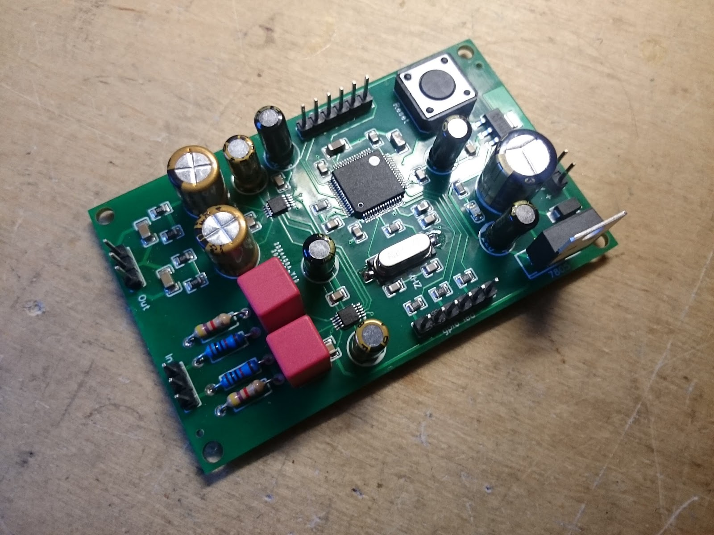

STM32
Turning microcontrollers into audio processors. 5 notes.
 STM32
STM32STM32 in final 'product'
On the bench is the latest board I developed: a compact STM32F4 loudspeaker processor with its converters, connectors and a mains transformer. The global chip shortage has stalled it a bit, but the software side is…

STM32STM32 audio processing part3
On the bench is a cheap Pmod I²S2 ADDA board, a tangle of Dupont wires and an STM32F407. It is the quickest way to get audio in and out of an MCU, and it is also where the HAL bugs start to show. If you are really…
 STM32
STM32Using STM32F4 series MCU as a loudspeaker processor
On the bench is a bare STM32F4 board with nothing but a blinking LED. Before it can process a single sample, it has to be programmed, and that means learning a different kind of coding. There is a lot of information out…
 STM32
STM32STM32F4 loudspeaker processing part 2
On the bench is an STM32F4 Discovery board, a small I²S DAC and a tangle of jumper wires. Nothing is playing yet. The first milestone was simply getting the board to blink. Once that blinking light works — and maybe you…
 STM32
STM32Powered Loudspeakers + DSP...
On the bench is a small board of my own making. It is the first step towards a powered loudspeaker that does exactly what I want: DSP inside the box, no front-panel controls, no rack of outboard gear. The details came…